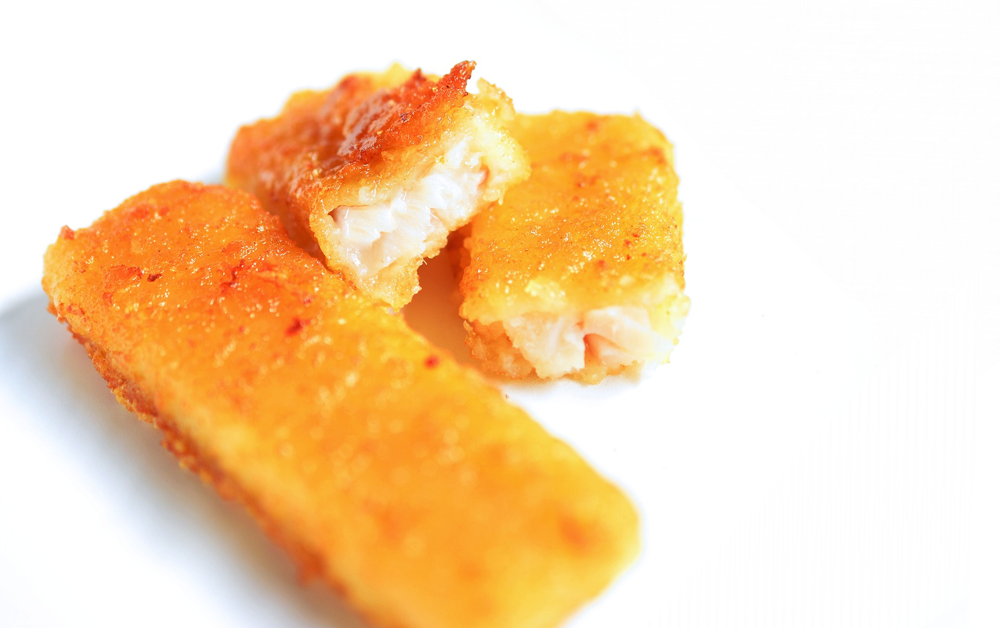

Fish Sticks

Do you like fish sticks?
Ingredients
- 1 pound cod fillets
- ¼ cup all-purpose flour
- 1 egg
- ½ cup panko bread crumbs
- ¼ cup grated Parmesan cheese
- 1 tablespoon parsley flakes
- 1 teaspoon paprika
- ½ teaspoon black pepper
- cooking spray
Steps
- Preheat an air fryer to 400 degrees F (200 degrees C).
- Pat fish dry with paper towels and cut into 1x3-inch sticks.
-
Place flour in a shallow dish. Beat egg in a separate shallow dish.
Combine panko, Parmesan cheese, parsley, paprika, and pepper in a third
shallow dish.
-
Coat each fish stick in flour, then dip in beaten egg, and finally coat
in seasoned panko mixture.
-
Spray the basket of the air fryer with nonstick cooking spray. Arrange
1/2 the sticks in the basket, making sure none are touching. Spray the
top of each stick with cooking spray.
-
Cook in the preheated air fryer for 5 minutes. Flip fish sticks and cook
an additional 5 minutes. Repeat with remaining fish sticks.
Return to Home Page